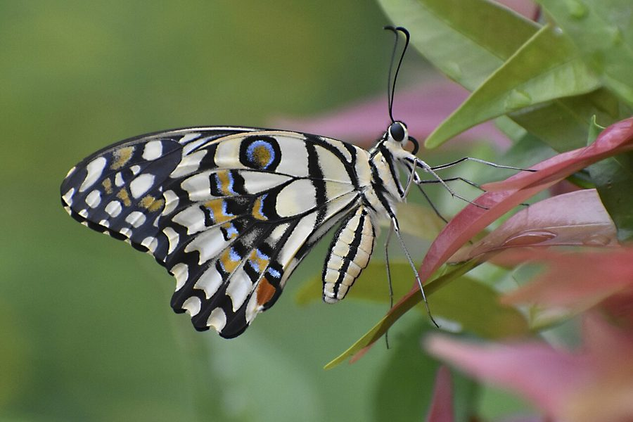

नींबू तितलीLime Butterfly
Papilio demoleus · Papilionidae · INS-0004

- Scientific name
- Papilio demoleus Linnaeus, 1758
- Family
- Papilionidae
- Hindi
- नींबू तितली / मालाबार तितली
- Status here
- native
- IUCN
- LC
When to look कब देखें
Present all year.
Lime Butterfly / Chequered Swallowtail
Papilio demoleus Linnaeus, 1758 — Papilionidae
नींबू तितली — शायद पूर्वी यूपी में सबसे पहले नज़र आने वाली तितली है — इसलिए कि यह सबसे बड़ी और सबसे ज़्यादा दिखने वाली है। यह दुनिया की सबसे अधिक अध्ययन की गई तितलियों में से एक है।
Quick Identification शीघ्र पहचान
| Feature | Description |
|---|---|
| Size | Large swallowtail butterfly; wingspan ranges from 80–100 mm |
| Colour | Yellow-and-black chequered pattern on wings; hindwings feature blue scaling and orange-red lunules |
| Tails | Completely absent on hindwings (tailless swallowtail) — key distinguishing feature from other swallowtails |
| Flight Style | Fast, powerful, slightly undulating, and gliding; often flies 2–4 m above ground |
| Host Plants | Exclusively Rutaceae family (lemon, curry leaf, bael, orange) |
Field tip: Look for a large, tailless black-and-yellow chequered butterfly flying actively around citrus bushes or curry leaf plants. The presence of a prominent orange-red crescent-shaped spot and blue scales on the tailless hindwing is the most reliable combination for field identification.
Morphology आकृति विज्ञान
| Measurement | Range |
|---|---|
| Body length (adult) | 25–30 mm |
| Wingspan | 80–100 mm |
| Forewing length | 40–50 mm |
Wingspan: 80–100 mm.
Forewing (upper surface): Black with numerous yellow spots arranged in rows — creating a "chequered" pattern. Spots large near the costa (leading edge), smaller toward the wing tip.
Hindwing (upper surface): Black ground color. Submarginal row of yellow spots. Inner area has a large area of blue scaling near the body. A curved band of orange-red lunules (crescent-shaped spots) near the margin — this orange band is the most vivid field mark.
Body: Black above; yellow below.
Tails: Absent — distinguishing P. demoleus from all other large swallowtails of UP that have distinctive hindwing tails.
Sexes: Very similar; females slightly larger and with slightly more blue on hindwing.
Seasonal variation: Dry-season form (November–February) slightly paler; wet-season form brighter. Multiple broods per year.
Life Cycle जीवन चक्र
Complete metamorphosis: Egg → Larva → Pupa → Adult.
Egg: Pale yellow, round, 1–1.5 mm; laid singly on the u斐side of young citrus leaves or leaflets. Female selects the youngest, most tender leaves — identifiable by a slightly paler green color.
Larva (caterpillar): Passes through 5 instars over 15–20 days:
- Early instars (1–3): Brown with white saddle marking — closely mimics bird droppings. Remarkable camouflage strategy.
- Late instars (4–5): Green with white diagonal stripe; eye-spots on the thorax that resemble a snake's face — induces snake-mimicry startle response in birds.
Osmeterium: When disturbed, late-instar larvae evert a bright orange, forked, snake-tongue-like organ (osmeterium) from behind the head — releases a strong, unpleasant chemical smell (Rutaceae derived) that deters ants and small predators. One of the most dramatic defensive displays in Indian insects.
Pupa: Green or brown (color-matching the pupation substrate); attached by a silk girdle; 10–14 days.
Adult: 1–2 weeks lifespan; multiple generations per year, continuous in eastern UP.
Host Plants परपोषी पौधे
Larvae feed exclusively on plants of family Rutaceae:
| Host Plant | हिंदी | Common in eastern UP? |
|---|---|---|
| Citrus limon (Lemon) | नींबू | Yes — homesteads |
| Citrus sinensis (Orange/Sweet lime) | संतरा / मौसम्बी | Occasional |
| Murraya koenigii (Curry leaf) | कड़ी पत्ता / मीठा नीम | Common — kitchen gardens |
| Aegle marmelos (Bel) | बेल | Common — temple gardens |
| Feronia elephantum (Wood apple) | कैथ | Less common |
Ecological Role पारिस्थितिक भूमिका
Pollinator: Adults visit flowers of many plant species — parthenium (ironically!), lantana, marigold, hibiscus, and many wild flowers. They carry pollen passively on their bodies. Not as efficient as bees but important for certain flower types.
Prey species: Lime butterfly adults and larvae are consumed by many predators:
- Praying mantis — ambushes adults at flowers
- Signature spider (Argiope) — adults caught in webs
- Drongo and Indian Roller — catch adults in flight
- Parasitic wasps (Trichogramma sp.) lay eggs in lime butterfly eggs — internal parasitoid
Indicator value: Presence of lime butterfly indicates the presence of host Rutaceae plants nearby. Population density tracks citrus cultivation and wild Rutaceae availability.
Agricultural / Human Relevance कृषि और मानव संबंध
Citrus pest: Larvae can cause significant defoliation on young citrus plants (nurseries) when populations are high. Mature trees are rarely seriously damaged — only a few leaves per twig are eaten. Home garden lemon trees in eastern UP frequently support larvae, and the impact on healthy trees is cosmetic at most.
Conservation note: Lime butterfly has been used extensively as a model organism for butterfly research, migration biology, wing pattern genetics, and larval mimicry evolution. There is more published science on Papilio demoleus than on any other South Asian butterfly.
Expected Locally स्थानीय रूप से अपेक्षित
Not a field record. Written from published accounts for eastern Uttar Pradesh. No confirmed local sighting yet — if you have seen it, that is what the atlas needs.
अभी तक स्थानीय पुष्टि नहीं। यह विवरण प्रकाशित स्रोतों से है, किसी अवलोकन से नहीं।
The Lime Butterfly is one of the most familiar and easily observed insects in Basti district. It can be found in almost any home garden with a curry leaf plant or a lemon tree. Homeowners frequently observe the caterpillars feeding on young foliage, and children are often fascinated by the caterpillar's defense mechanism of showing its orange osmeterium. The butterflies are highly active in sunny weather and can be observed visiting flowers of ornamental plants. The caterpillars mimicking bird droppings are also a common sight on the upper surface of citrus leaves.
Distribution वितरण
Global range: Widespread across southern and eastern Asia, from the Arabian Peninsula and India through China, Japan, Southeast Asia, and Australia; recently introduced and invasive in the Caribbean and Central America.
In India: Extremely common and found throughout the plains and hills of all states and union territories, up to elevations of 2,000 m in the Himalayas.
In Uttar Pradesh: Ubiquitous across the entire state, present in virtually every village garden, town park, agricultural area, and citrus grove.
In Basti district / eastern UP: Abundant year-round; commonly seen in home gardens hosting curry leaf bushes, temple yards with bael trees, and lemon orchards.
Range notes: No significant range changes documented locally, though its global range has expanded due to accidental introductions.
Research Questions शोध प्रश्न
- How many eggs does a female lay per visit to a lemon tree? / नींबू के एक पेड़ पर मादा कितने अंडे देती है? — Watch a female at a lemon tree; record every time she touches a leaf. Count eggs afterward.
- Can you find larvae in all 5 instars on a single lemon tree? / एक नींबू पेड़ पर क्या सभी अवस्थाओं की इल्लियाँ मिल सकती हैं? — Systematic search in September–October.
- How does the osmeterium smell differ from larva to larva? / अलग-अलग इल्लियों का उत्सर्जन अलग महकता है? — Simple sensory experiment; touch a late-instar larva gently; describe the smell.
- Which flowers do lime butterflies visit most in your area? / नींबू तितली आपके क्षेत्र में किस फूल पर सबसे ज़्यादा जाती है? — 15-minute timed watch at a flowering plant; count visits by this species vs others.
- Are lime butterfly populations seasonal or year-round in your village? / क्या नींबू तितली साल भर दिखती है या किसी मौसम में कम होती है? — Monthly sighting records from one fixed location for 12 months.
Similar Species मिलती-जुलती प्रजातियाँ
| Species | How to tell apart | हिंदी |
|---|---|---|
| Common Mormon (Papilio polytes) | Female mimics Crimson Rose; male black with white spots; has hindwing tails | कॉमन मॉर्मन — पूँछ वाली |
| Common Jay (Graphium doson) | Blue-green spots on black wings; faster flight; forest edge | जे — नीले-हरे धब्बे |
| Tailed Jay (Graphium agamemnon) | Green spots on black wings; hindwing tails present | पूँछ वाला जे |
Field rule: Large yellow-black butterfly + no hindwing tails + orange-red and blue spots on hindwing = Lime Butterfly. No tails = the most reliable field mark.
Taxonomy & Classification वर्गीकरण
Original description. Papilio demoleus was described by Carl Linnaeus in 1758 in Systema Naturae (10th Edition), 1: 464. Type locality: "Asia" (subsequently restricted to Canton, China). The genus name Papilio is Latin for butterfly, and the species epithet demoleus refers to a character from Greek mythology.
Subspecies. Six subspecies are recognised globally:
| Subspecies | Authority | Range | Notes |
|---|---|---|---|
| Papilio demoleus demoleus | Linnaeus, 1758 | Mainland Asia, India | This is the nominate subspecies present in eastern UP |
| Papilio demoleus sthenelus | Macleay, 1826 | Australia | Features smaller yellow spots |
| Papilio demoleus malayanus | Wallace, 1865 | Malay Peninsula, Sumatra | Distinct larval and adult markings |
| Papilio demoleus libanius | Fruhstorfer, 1908 | Taiwan, Philippines | Heavily patterned wings |
| Papilio demoleus novoguineensis | Rothschild, 1908 | New Guinea | Localized island subspecies |
| Papilio demoleus sthenelinus | Rothschild, 1895 | Lesser Sunda Islands | Rare island form |
Family and order placement. Belongs to the family Papilionidae (swallowtails), subfamily Papilioninae, tribe Papilionini. The swallowtail family is a highly diverse group of large, colourful butterflies, containing over 550 species. Papilio is the nominate genus and includes many citrus-feeding species.
Phylogenetic notes. Papilio demoleus is closely related to the African Papilio demodocus, with which it forms a species group. Recent genetic analyses support their status as sister species that diverged relatively recently, possibly due to geographical isolation.
IUCN status rationale. Listed as Least Concern (LC) on the IUCN Red List. The species has an extremely large geographic distribution, is highly adaptable to human-modified habitats (such as citrus orchards), and has stable or increasing global population trends.
Photo Gallery फोटो गैलरी
Atlas Connections संबंधित प्रजातियाँ
- Giant Asian Mantis — ambush predator of lime butterfly adults at flowers (INS-0006)
- Signature Spider — catches lime butterfly adults in web (SPD-0001)
- Black Drongo — hawking predator; catches in flight over gardens (BRD-0005)
- Indian Roller — catches large butterflies in flight (BRD-0003)
- Lantana — one of the most commonly visited nectar sources for adults (FLR-0007)
References संदर्भ
- Linnaeus, C. (1758). Systema Naturae per regna tria naturae, secundum classes, ordines, genera, species, cum characteribus, differentiis, synonymis, locis. Laurentii Salvii, Holmiae.
- Wynter-Blyth, M.A. (1957). Butterflies of the Indian Region. Bombay Natural History Society, Bombay.
- Kunte, K. (2000). Butterflies of Peninsular India. Universities Press, Hyderabad.
- Kehimkar, I. (2008). The Book of Indian Butterflies. Bombay Natural History Society & Oxford University Press, Mumbai.
- Zakharov, E.V. et al. (2004). Independent origins and multiple evolutionary transitions of different host use patterns in swallowtail butterflies (Lepidoptera: Papilionidae). Systematic Biology, 53(2), 281–292.
- GBIF Occurrence Data — Papilio demoleus, India (2026).
Source file: species/fauna/insects/lime_butterfly.md